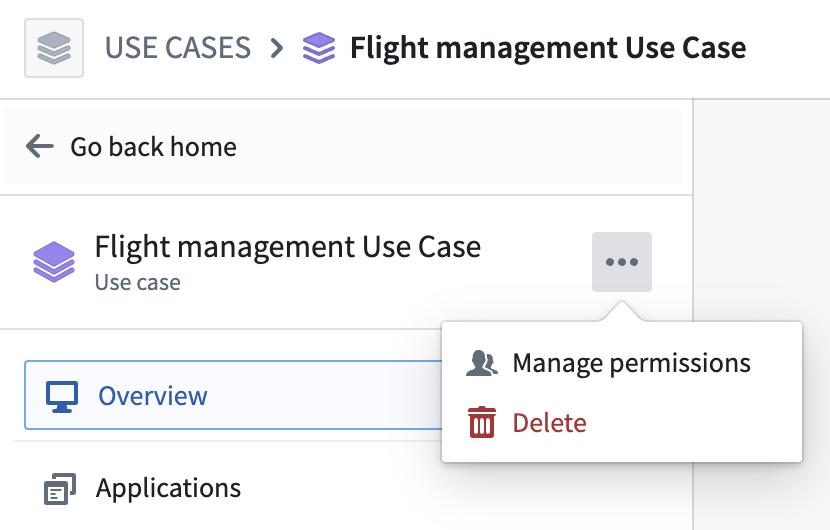
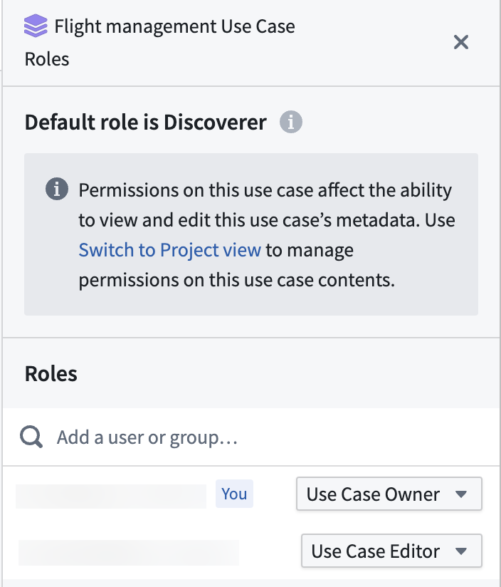

Use case permissions only manage the permission of use case metadata.
The permission of the use case metadata is managed through the Roles panel. In the use case overview page, select the ... option in the left sidebar or on the top right side of the overview page and select Manage permissions.

You can use the Roles panel to add or remove users or groups to the use case and assign them either the Use Case Owner or Use Case Editor role.

Use Case Owner: Users with Use Case Owner permissions can both manage the use case permissions and edit use case metadata.
Use Case Editor: Users with Use Case Editor permissions can only edit the use case metadata.
:::callout{theme="neutral"} By default, use case metadata is visible to everyone in the Organization, even if the users cannot view or edit the use case resources. :::
Permissions to the resources included in the use case are managed by the permission on the resource itself or the Project backing the use case. Learn more about managing Project and Ontology resource permissions.